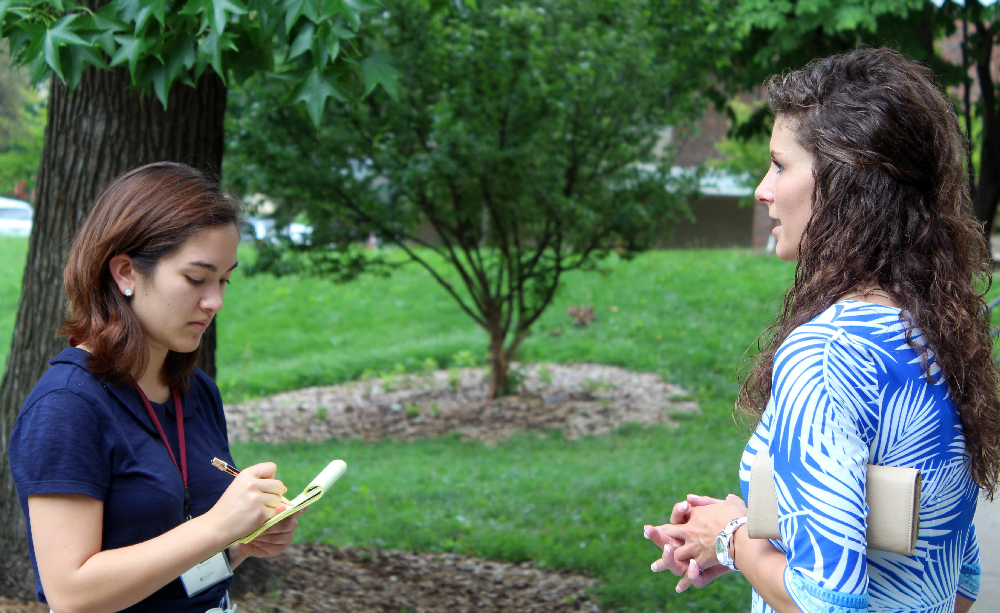

This year, we're celebrating 49 years of immersing high school students in the Missouri Method! We are one of the nation’s longest running journalism workshops for high school students. Here, students participate in our weeklong seminar where they have the oppurtunity to create professional-quality content for MU's newsrooms, including the Columbia Missourian and KOMU, the local NBC Affiliate.
Mobile Technologies: Learn how to interview sources, shoot video, take photos – do everything you need for your story – while you’re on location. In today’s world, journalists can work from anywhere.
Social Media: Use Twitter, Snapchat, Facebook and other social platforms to engage with the public, gather information and more for all stages of your reporting.
Documentary Journalism: Go beyond day-turn reporting and try your hand at long-form storytelling. You’ll learn new investigative and technical skills in this exercise.
Data Journalism: Dig deep into publicly available information in government databases to discover facts and statistics. Learn how to produce graphics that visualize the information for the public.
Lots More: Web design and production, narrative writing and story structure, other timely and current topics.
The workshop is open to exceptional sophomores but junior/senior status is preferred.